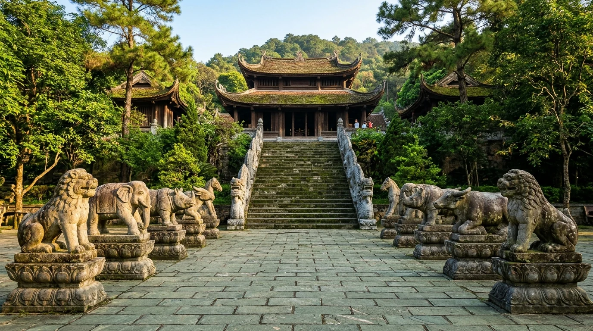

🧭 1. Tổng Quan Chùa Phật Tích & Chùa Dâu
Tọa lạc trên sườn nam núi Phật Tích (núi Lạn Kha, xã Phật Tích (huyện Tiên Du cũ)), Chùa Phật Tích (Vạn Phúc Tự) được khởi dựng năm Đinh Dậu 1057 dưới triều vua Lý Thánh Tông và đại trùng tu cuối thế kỷ XVII gắn với công đức Thiền sư Chuyết Chuyết. Di tích được xếp hạng Di tích Quốc gia đặc biệt năm 2014, lưu giữ hai Bảo vật Quốc gia vô giá từ vương triều Lý: pho tượng Đức Phật A Di Đà bằng đá xanh nguyên khối (thân tượng cao 1,87m, tính cả bệ sen rồng cao 2,69m) và bộ 10 linh thú bằng đá (sư tử, voi, tê giác, trâu, ngựa) chầu trước thềm đá chạm rồng, cùng vườn 32 ngôi tháp cổ (nổi bật Tháp Phổ Quang bằng đá (còn tượng nhục thân Tổ Chuyết Chuyết được phụng thờ tại Nhà Tổ)) và Đại Phật tượng A Di Đà đá cao 27m trên đỉnh núi (2010).
Cách núi Phật Tích khoảng 12km bên bờ sông Thiên Đức xưa là Chùa Dâu (Pháp Vân Tự / Diên Ứng Tự) thuộc vùng cổ thành Luy Lâu (phường Trí Quả, thị xã Thuận Thành cũ) — được xếp hạng Di tích Quốc gia đặc biệt năm 2013. Hình thành từ khoảng thế kỷ II sau Công nguyên, Chùa Dâu là trung tâm Phật giáo cổ xưa nhất nước ta, nơi Thiền sư Ấn Độ Tỳ-ni-đa-lưu-chi đến lập dòng thiền đầu tiên năm 580 và là nơi Phật giáo Ấn Độ dung hợp nhuần nhị với tín ngưỡng nông nghiệp bản địa tạo nên hệ thống thờ Tứ Pháp (Pháp Vân, Pháp Vũ, Pháp Lôi, Pháp Điện) cầu mưa thuận gió hòa, nổi bật với ngọn Tháp Hòa Phong gạch trần rêu phong sừng sững giữa sân chùa.
📜 2. Nghi Thức Thắp Hương & Văn Khấn Cổ Tự
Chùa Phật Tích và Chùa Dâu là những bảo tàng sống lưu giữ các Bảo vật Quốc gia bằng đá xanh thời Lý gần 1.000 năm tuổi và hệ thống tượng gỗ Tứ Pháp, mộc bản cổ quý hiếm. Khi chiêm bái, quý hành giả cần tuân thủ nghiêm ngặt quy chuẩn bảo tồn di sản:
🏮 3 Quy Chuẩn Cốt Lõi Khi Hành Lễ Tại Phật Tích & Chùa Dâu
🕯️ Tuyệt Đối Bảo Vệ Bảo Vật Quốc Gia
Không thắp hương bên trong Đại Hùng Bảo Điện và Thượng điện Tứ Pháp; tuyệt đối không chạm tay, không xoa tượng đá thời Lý, hàng thú đá cổ hay đặt tiền lẻ lên bệ sen đá để bảo vệ bề mặt chạm khắc ngàn năm.
🗣️ Khấn Nguyện Chánh Tín — Không Mê Tín
Đọc văn khấn nhỏ nhẹ với tâm thành kính tri ân tiền nhân, cầu quốc thái dân an, mưa thuận gió hòa và trí tuệ sáng suốt; không đốt vàng mã hay sớ điệp rườm rà trong khuôn viên di tích đặc biệt.
🪷 Lễ Vật Quê Hương Kinh Bắc Thuần Khiết
Dâng lễ chay thanh tịnh gồm hoa sen, hoa mẫu đơn (loài hoa gắn với truyền tích núi Lan Kha), trái cây theo mùa, chè lam Phật Tích hoặc bánh chưng, oản phẩm chay.
⛩️ 3. Lộ Trình 6 Trạm Hành Lễ & Chánh Niệm
Lộ trình 6 trạm dẫn dắt hành giả bước lên từng bậc đá rồng thời Lý trên núi Phật Tích rồi xuôi về miền đất cổ Luy Lâu chiêm bái Tháp Hòa Phong và Thượng điện Tứ Pháp Chùa Dâu.
Hành Trình Thiền Hành Phật Tích — Chùa Dâu
Thực hành thiền hành qua 6 trạm di sản đặc biệt của vùng đất Phật Bắc Ninh: chiêm ngưỡng Bảo vật Quốc gia thời Lý, đảnh lễ Vườn Tháp Tổ và kính bái Tứ Pháp Luy Lâu.

Từ chân núi Phật Tích bước lên các cấp nền bó đá cổ là thềm bậc đá chạm rồng uốn lượn mềm mại đặc trưng mỹ thuật thời Lý và bộ 10 linh thú bằng đá sa thạch (đá cát hạt mịn xám xanh) thời Lý được công nhận Bảo vật Quốc gia. Năm cặp linh thú gồm sư tử, voi, tê giác, trâu và ngựa cao khoảng 1,1–1,2m nằm phủ phục thành kính trên bệ hoa sen đối xứng hai bên đường thần đạo dẫn vào tòa chánh điện.
🚪 Nghi Thức Hành Lễ & Lối Đi
- Tuyệt đối không chạm hay ngồi lên tượng đá: Bộ 10 linh thú bằng đá sa thạch thời Lý (thế kỷ XI) là Bảo vật Quốc gia vô giá; chỉ đứng ngoài quan sát, không xoa tay hay đặt vật dụng lên lưng thú.
- Đi theo hai lối bậc bên: Bước nhẹ nhàng hai bên thềm đá, giữ hơi thở đều đặn khi vượt các cấp nền sườn núi.
- Quan sát hoa mẫu đơn sân chùa: Khuôn viên bậc cấp trồng nhiều khóm hoa mẫu đơn gợi nhớ hội hoa truyền thống từ thời Lý – Trần.
🙏 Giá Trị Lịch Sử & Tâm Linh
- Biểu tượng muôn loài quy ngưỡng Phật pháp: Từ mãnh thú như sư tử, tê giác đến loài vật hiền lành như voi, trâu, ngựa đều an nhiên phủ phục trên đài sen nghe pháp.
- Tinh hoa điêu khắc vương triều Lý: Đường nét chạm khắc khỏe khoắn mà thanh thoát, gắn liền với nền móng tháp cổ xây dựng từ năm 1057 dưới triều Lý Thánh Tông.
- Huyền tích núi Lan Kha: Tương truyền nơi đây từng diễn ra hội hoa mẫu đơn gắn với tích chàng Từ Thức gặp nàng tiên Giáng Hương trong kho tàng văn học cổ Việt Nam.
CHỨNG NHẬN CHIÊM BÁI PHẬT TÍCH & CHÙA DÂU TRỌN VẸN
Chúc mừng bạn đã hoàn thành trọn vẹn lộ trình 6 trạm hành hương về cội nguồn Phật giáo Kinh Bắc — từ núi Lan Kha Chùa Phật Tích đến đất cổ Luy Lâu Chùa Dâu. Nguyện cầu hồng ân Tam Bảo và Tứ Pháp gia hộ mùa màng tươi tốt, gia đạo bình an, tâm trí viên minh.
🧭 4. Lịch Trình Chiêm Bái 1 Ngày Tối Ưu
Gợi ý lịch trình 1 ngày xuất phát từ Thủ đô Hà Nội (~25km), kết nối trọn vẹn hai ngôi đại cổ tự cùng các làng nghề di sản văn hóa Kinh Bắc:
Buổi Sáng (07h30 – 11h30): Chiêm Bái Chùa Phật Tích & Đỉnh Núi Lan Kha
- 07h30: Xuất phát từ Hà Nội qua cầu Thanh Trì / cầu Chương Dương hướng về Tiên Du, Bắc Ninh (~40 phút di chuyển).
- 08h15: Bước lên thềm bậc đá chạm rồng, chiêm ngưỡng Bộ 10 linh thú đá thời Lý và dâng hương đảnh lễ Bảo vật Quốc gia Tượng Phật A Di Đà đá xanh (1057) tại Đại Hùng Bảo Điện.
- 09h45: Viếng Vườn tháp cổ 32 ngôi & Tháp Phổ Quang, sau đó tản bộ dưới rừng thông lên đỉnh núi Lan Kha chiêm bái Đại Phật Tượng A Di Đà cao 27m.
Buổi Trưa (11h30 – 13h30): Ẩm Thực Chay Kinh Bắc & Thưởng Trà Chè Lam
Nghỉ chân dưới chân núi Phật Tích hoặc vùng Thuận Thành, dùng mâm cơm chay mộc mạc đậm vị quê hương Kinh Bắc (canh măng nấm chay, đậu phụ làng Chờ kho tương, xôi gấc hạt sen) và nhấm nháp chè lam Phật Tích dẻo thơm hương gừng bên ấm trà sen nóng.
Buổi Chiều (13h45 – 17h00): Chùa Dâu Luy Lâu & Làng Tranh Dân Gian Đông Hồ
- 13h45: Di chuyển sang vùng Luy Lâu (Thuận Thành, cách Phật Tích ~12km), chiêm ngưỡng Tháp Hòa Phong gạch trần đỏ sẫm giữa sân Chùa Dâu.
- 14h30: Đảnh lễ pho tượng Bà Dâu — Đức Pháp Vân tại Thượng điện, tham quan khu trưng bày Mộc bản cổ chùa Dâu và chùa Tổ Định Không.
- 15h45: Ghé thăm Làng tranh dân gian Đông Hồ (cách Chùa Dâu ~4km bên bờ đê sông Đuống) tìm hiểu nghệ thuật in tranh khắc gỗ trên giấy dó quét điệp óng ánh trước khi về lại Hà Nội.